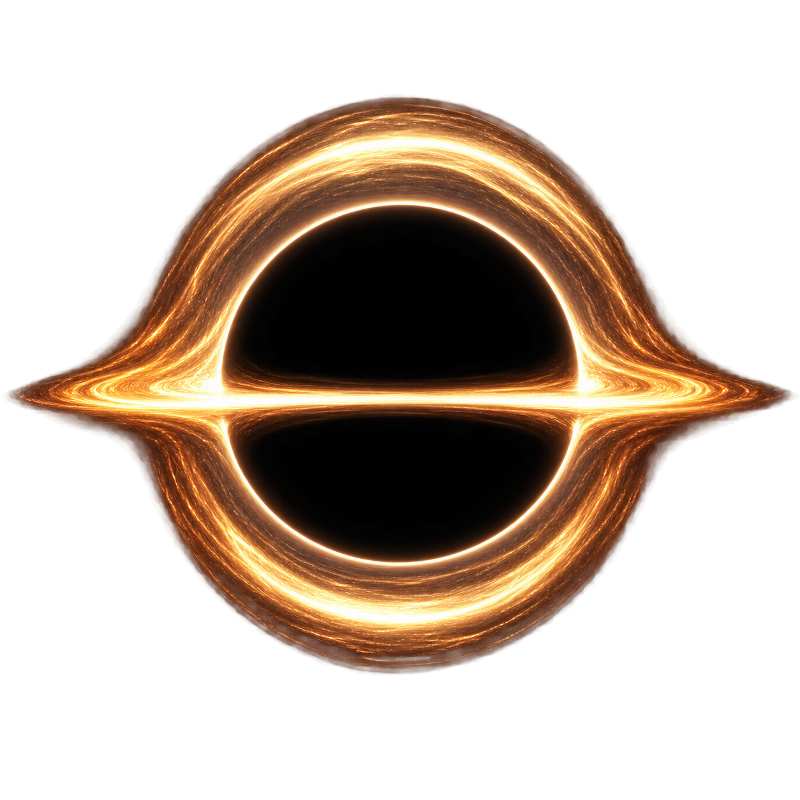
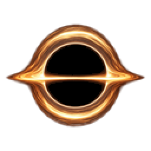

A · GARGANTUA CLASSIC
calmest · clearest physics

actual 128 · neutral light
actual 128 · Play Field dark

정통적 장엄함금백색 수평 원반
차분한 좌우 대칭
상·하 lens image 2층
차분한 좌우 대칭
상·하 lens image 2층
shadow 10.69%bbox 4,20–124,108margin 4/20/4/20disk +0.11°edge α 0PASS · opaque empty shadow
PASS · upper/lower lensing
PASS · 2× exact nearest
PASS · upper/lower lensing
PASS · 2× exact nearest
장점 설명 없이 가장 즉시 블랙홀로 읽힌다. 단점 따뜻한 단색 비중이 높아 게임 고유색과의 연결은 C보다 약하다.